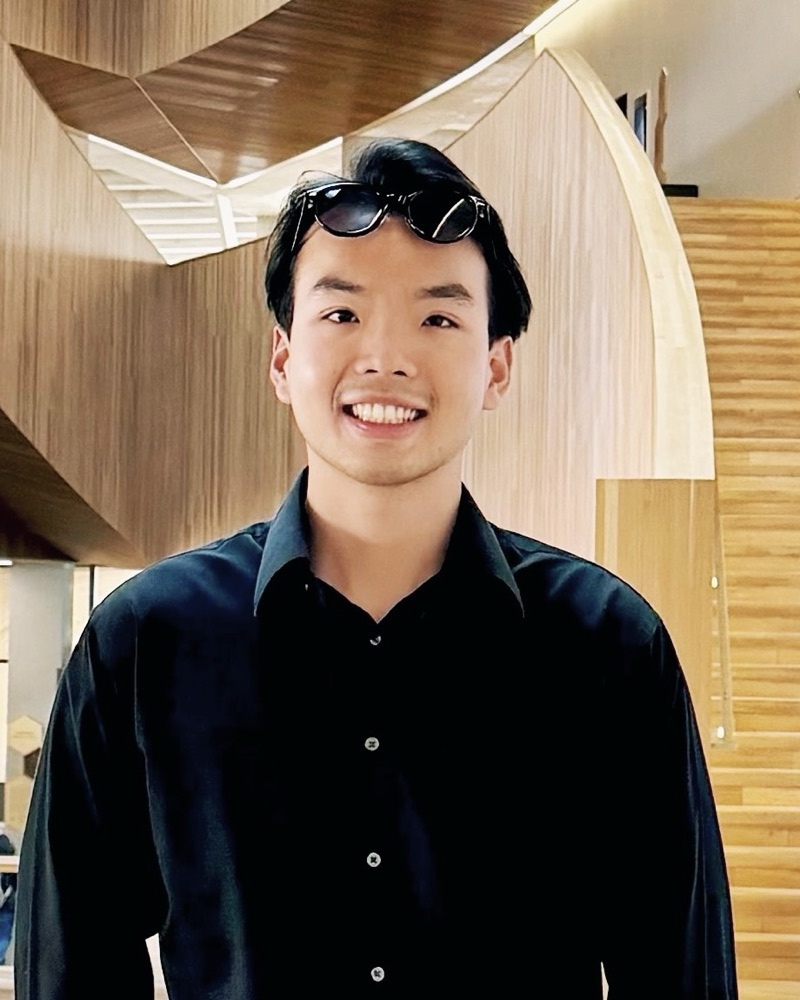
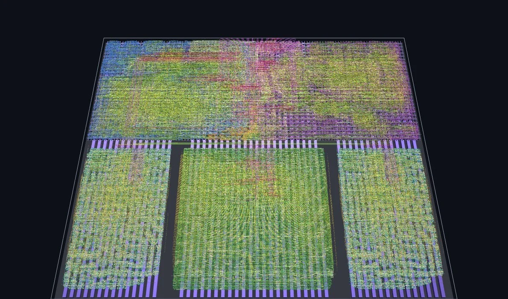
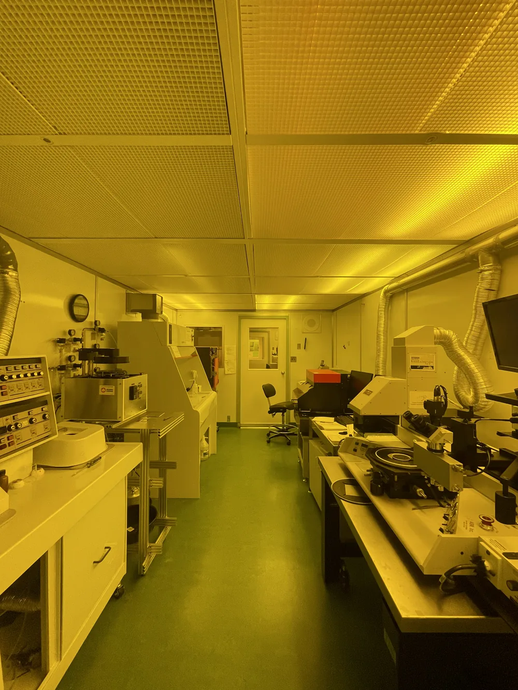
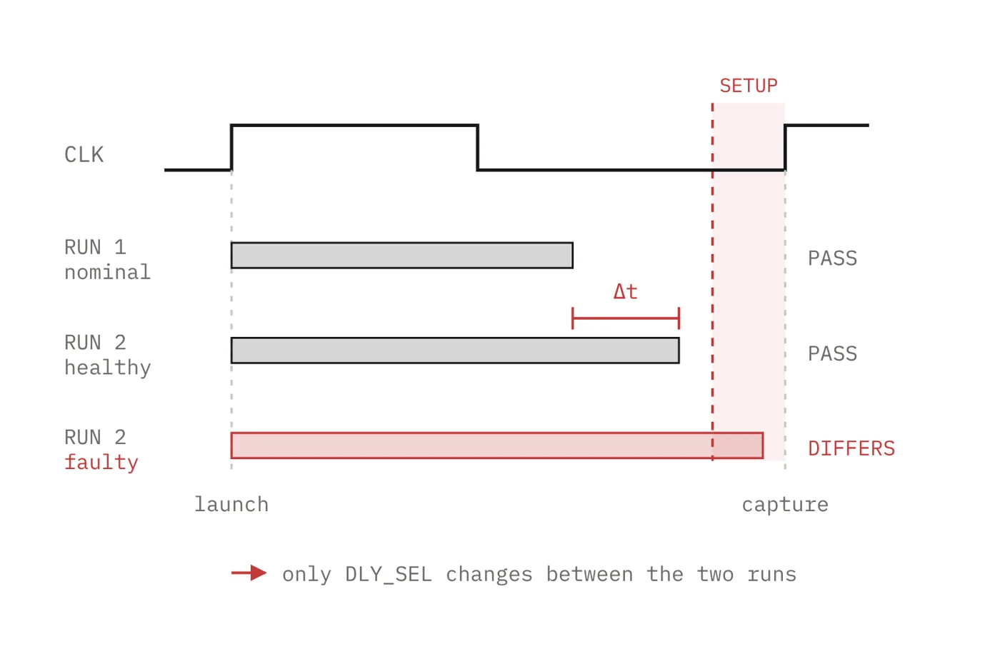
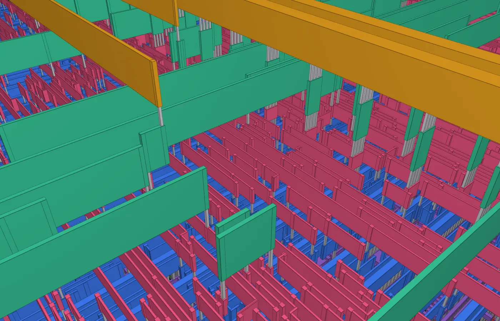
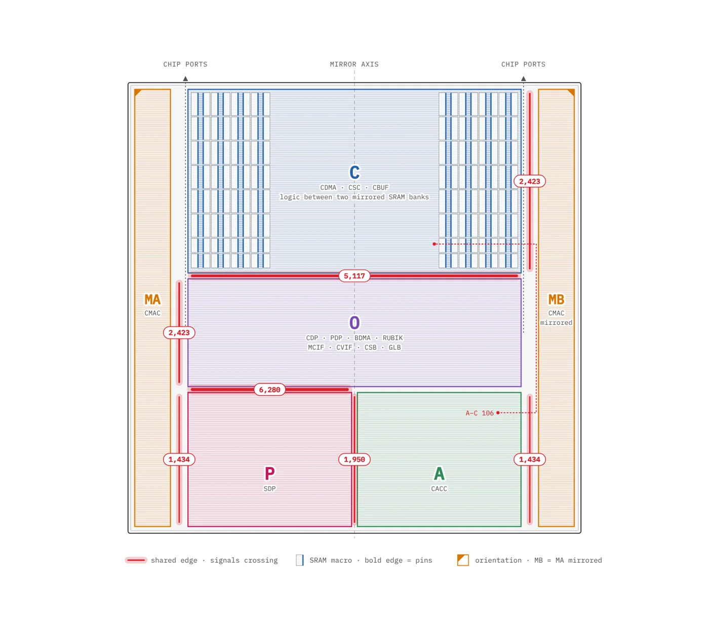
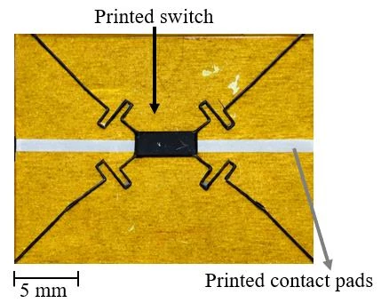
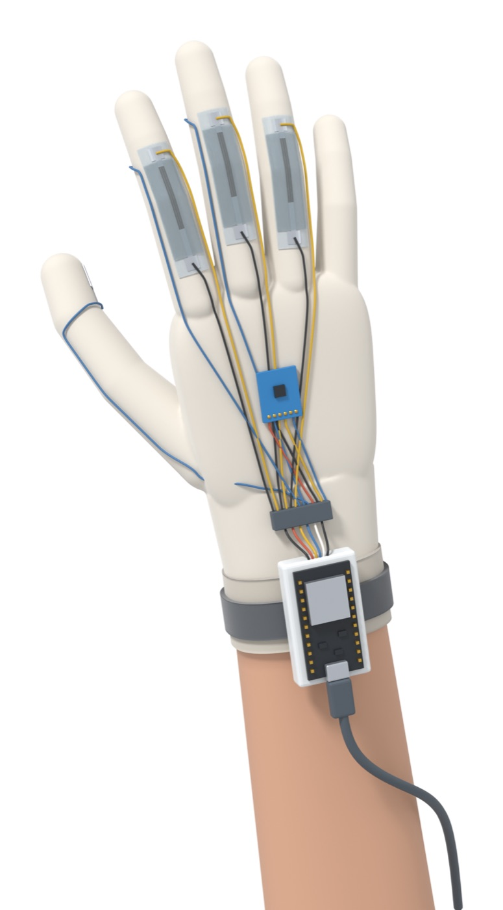

Digital IC · ASIC physical design
Khoi
Nguyen
Fourth-year electrical engineering student at the University of Manitoba. I take digital designs from RTL to GDSII, and I spent a year fabricating devices in a Class 10 cleanroom.
- Focus
- RTL-to-GDSII · DFT · timing closure
- Process
- 12 nm FinFET · MATRIX-A5 CFET · SKY130
- Flow
- Genus · Innovus · Tempus · Voltus · Pegasus · Modus
- Fab
- 200 nm DUV lithography · ion implant · ICP-RIE · PVD/CVD
Selected work
Seven projects · 2025–2026
RISC-V + INT8 systolic array on a CFET PDK
A lowRISC Ibex core with a memory-mapped 8×8 INT8 systolic-array accelerator, taken from RTL to GDS on a research complementary-FET kit with backside power delivery. Built twice, with and without the accelerator.
- LVS, Innovus DRC, LEC pass at 750 ps
- 1.50 M transistors LVS-matched
- GEMM 3.8× faster, 2.5× less energy

Cleanroom fabrication
A year at the Nano-Systems Fabrication Laboratory running CMOS and MEMS process steps on 6-inch wafers: DUV lithography, ion implantation, ICP-RIE, PVD and CVD.

Delay-fault detection on a 12 nm RISC-V test chip
University of Waterloo, CMOS Design and Reliability Group. Variable D-Q delay flip-flops for transition-fault testing on an RV32IM core; I owned my CPU block’s RTL-to-GDSII flow and its DFT.
- 97.5% stuck-at coverage
- 0 TNS at 1 GHz

One-tile int4 NPU for Tiny Tapeout
A 2×2 int4 MAC array with per-row clock gating and a 96-flop scan chain, from RTL to a signed-off layout in one 161 × 112 µm tile with an open-source flow. Target shuttle TTSKY26d.
- DRC, LVS clean
- Timing met at 12 corners
- Clock gating saves 45–59%

NVIDIA NVDLA in 12 nm FinFET
NVIDIA’s open-source deep-learning accelerator, cut into five hard-macro partitions in a mirror-symmetric floorplan, with three threshold-voltage flavours, clock gating and full scan.
- All 5 partitions synthesized at 0.909 ns
- Block place-and-route under way

Printed Lorentz-force MEMS switch
Printed in silver on flexible polyimide and released by O2 plasma etch. An electrostatic hold-down keeps it closed after the drive current turns off.

Tap-to-click glove
Silver and carbon sensors printed on stretchable TPU turn thumb taps into mouse clicks. ECE 4600 capstone; my part is sensor fabrication and hardware design.